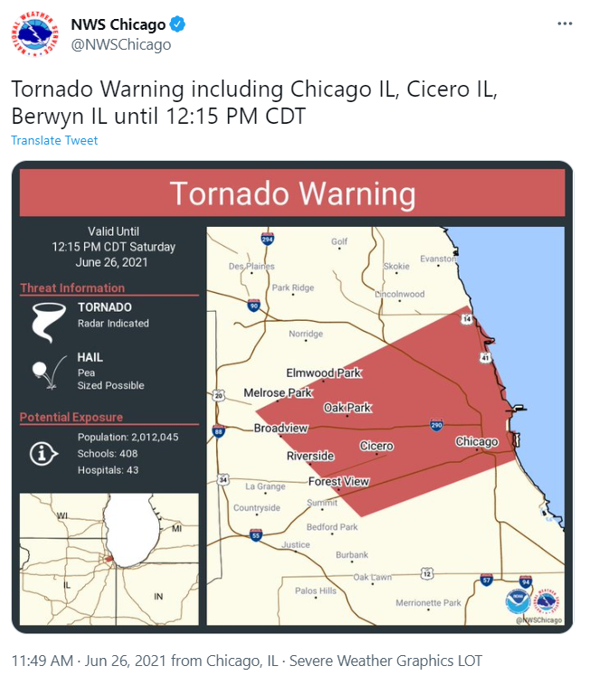

Ham Radio Field Day 2021 - Storms and Stations
This post is cross-posted to my Ham Radio specific blog, kk9jef.wordpress.com
Despite sunburns, shattered plastic, and a literal tornado warning, sunburns, I had a great time at Field Day 2021 this year.
My intention had been to head out to the northern Chicago suburbs on Saturday morning for some testing of the setup. My wife and I had purchased an annual pass to the Lake County dog parks in anticipation of the Fourth of July weekend, and our plan had been to drop her (and Winnifred, a very good dog) at one of these parks, go around the corner to a quieter, non-dog-filled local park, setup and operate for an hour and change, then pick the two of them up and head home. I'd charge my battery using an inverter in the car, grab some water and lunch at home, then be back out in a closer local park Saturday afternoon for a long operating session. And maybe, if I woke up in time, I'd pop back out in the morning to the park around the corner from my place for some grayline work on Sunday morning.

Chicago weather had other plans.

We spent pretty much the entire day on Saturday huddled indoors against a pretty fearsome storm, which including multiple tornado warnings, thunderstorm wanrings, flash flood alerts... it was a wild day. I did make it out once in the afternoon to run to the hardware store to work on an impromptu Magnetic Loop antenna project (more on that soon), but other than that, we were holed up with our poor frightened dog.

But like a breath of fresh air, Sunday brought cool(ish) clear skies, dry weather, and a rather perfect operating day by mid-morning. So I pulled the portable-rig back together and headed out to the originally-planned local park to catch the last few hours of Field Day.
My setup's changed a fair bit in the last couple years (and will likely be changing again soon). Here's what I was playing with on Field Day this year:
- Xiegu X108-G 20W Transceiver for SSB, CW, etc.
- Wolf River Coils "Mega Mini TIA" portable antenna, a stainless steel collapsible whip with a base-loading coil that sits on three removable tripod legs. WRC sells a wide variety of configurationsand sizes of this basic setup - mine is a 17' whip with the larger (~14") coil and 24" tripod legs. It'll tune around 80m to 10m, though of course on 80m it's reeeeally short.
- The antenna ships with three 10m radials, which attach to the tripod base with ring lugs. I added three 7.5m radials (1/4 wavelength on 30m) and re-used my 5m radials from the QRPGuys Tri-Band Vertical setup I had been using. Each set has a bullet connector on it, and a single ring-lug-to-three-bullet-connector squid attaches to the tripod
- The battery for the day was a TalentCell 12V, 6A, 8300mAh battery i picked up from Amazon. We used these batteries all the time in live theatre for their size and weight, and while I doubt that I'm getting the full 8300mAh from it (especially since the X108-G draws around 6A on transmit), it lasted me through a solid afternoon's operating.
- I remounted my iambic paddles from their cast-iron base to a lighter plastic one
- I picked up an Autek VA-1 antenna analyzer earlier this year, which makes a great quick tuning method for the antenna. I played around with bringing my Nano NVA H-4 out, but it's just a little too fiddly for regular field use.
- 25' of RG8x from the radio to the antenna
- A camp chair and a portable picnic table make from easy ergonomic in the field
- Logging is pen-and-paper, for now

I spent the first couple hours hunting and pouncing, mostly on 20m with a stint up to 15m. 20m was super-densely populated as usual; 15 less so, but still with some decent stations holding the band down. I made roughly 25 contacts in that time with some decent distance - Arizona, Florida, Arkansas, Pennsylvania..
At 1pm local time, Field Day hit 24 hours elapsed, which is the maximum operating time for home, mobile, and emergency operations center stations... but Class A (club) and Class B (1/2 op portable) were permitted to go to 4pm. And with the bands newly clearly of the massive home stations, I figured, why not call CQ for awhile?
WHAT A RIDE.
I held a frequency on 20 meters for roughly 75 minutes, during which I made 90+ contacts. Being the run station was an absolute blast - I've done such things at Field Days before, but never as a solo operator and never with my own personal station. Knowing there's no logger to have your bag, just you and the airwaves and the piles of people calling... a truly great time. I know I won't set any records for speed or quantity of contacts, but I had a blast.
I'm currently looking for a day to go out and do a Parks on the Air activation to recapture some of the rush of running a station. Really, what a joy. And I'll have a couple of new toys to play with by then...

73